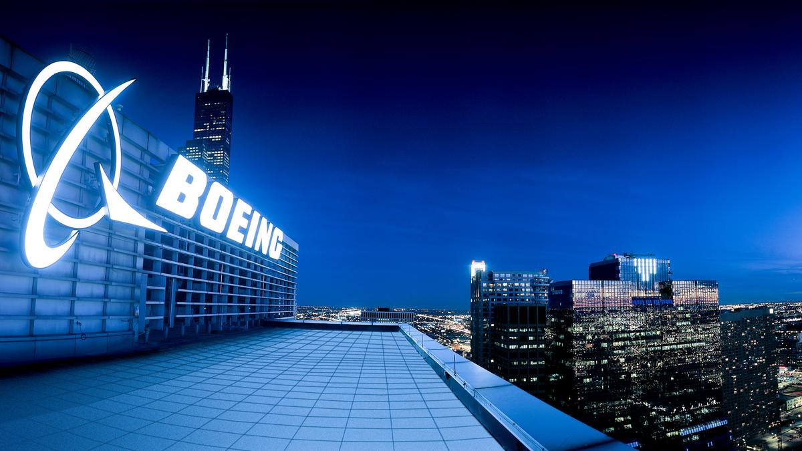

The aircraft manufacturer, currently based in Chicago, will move its headquarters to Arlington. It will thus be closer to political decision-makers, financial players and its customers.
Boeing is packing its bags. The aircraft manufacturer, currently based in Chicago, will move its headquarters to Arlington, near the capitol Washington. The company's leaders will thus join the headquarters of the division dedicated to defense, which has been located there since 2017. The group also plans to develop a research and technology center in Arlington.
"It makes strategic sense to locate our global headquarters in the region given its proximity to our customers and decision makers, and its access to world-class technical and engineering talent," commented the director. General, Dave Calhoun, in the release. The manufacturer is historically based near Seattle, in the northwest of the country, where its main factories are still located. But a few years after its merger with McDonnell Douglas, Boeing decided in 2001 to move its headquarters to Chicago, in the northeast of the country, to be closer to financial circles in New York but also to the capital Washington. The city had at the time prevailed over Denver, Colorado, and Dallas/Fort Worth, Texas.
Paul O’Connor, a marketing consultant who in 2001 led the local campaign for Boeing as executive director of World Business Chicago, said the decision hurts the city’s image as a draw for big businesses, particularly amid headlines about spikes in crime. “They were the gilded hood ornament of a global city,” O’Connor said Thursday, allowing that the news gave him “a pang” of sadness.
“They were great corporate citizens. I think Chicago will miss them,” O’Connor said. He said city officials should ask the company in a kind of exit interview what factors caused it to leave.